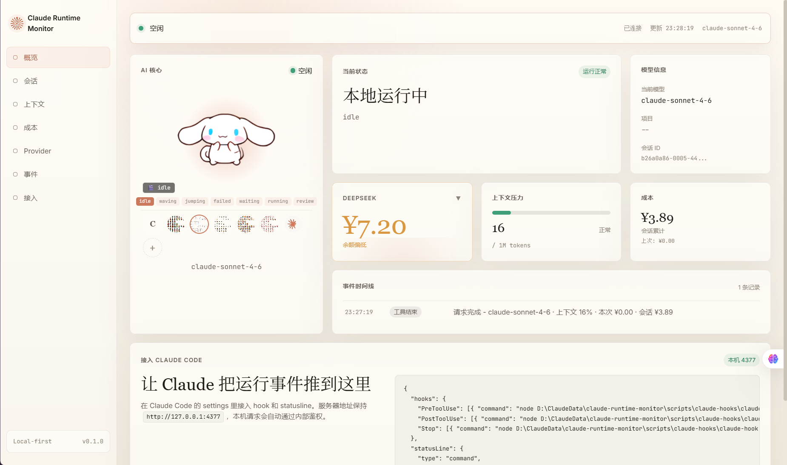

Runtime state
从 hook、statusline、进程检测和 cc-switch 日志中归纳 idle、thinking、editing、waiting_permission 等状态。
Claude Runtime Monitor 把状态、上下文、成本和 provider 余额整理成一个本地优先的实时控制台。它不是又一个日志窗口，而是给 agent 工作流准备的产品化驾驶舱。

页面和产品本体使用同一套暖白纸面、细线边界、珊瑚强调和克制 serif 标题。实物面板承担可信度，Three.js 材质舞台承担“运行中”的气氛。
从 hook、statusline、进程检测和 cc-switch 日志中归纳 idle、thinking、editing、waiting_permission 等状态。
AI 核心跟随运行状态变化，也支持导入 OpenPets 风格资源，让监控面板带一点活物感。
长会话真正危险的不是消息多，而是上下文压力看不见。这里把 token 压力抬到第一层。
DeepSeek、MiMo 或通用 provider 的额度和成本进入同一张运行图，避免跑到一半才发现余额不对。
首屏的折面材质、半透明监控层和珊瑚色脉冲线模拟 agent 运行时的信号路径：工具调用、上下文增长、余额刷新、用户确认。它们不会盖过产品，而是把产品的节奏托出来。
The monitor does not pretend to be the agent. It shows the agent's pressure, economy, and pace in a shape humans can act on.
pnpm install
cp .env.example .env
pnpm dev
# open
http://127.0.0.1:4377